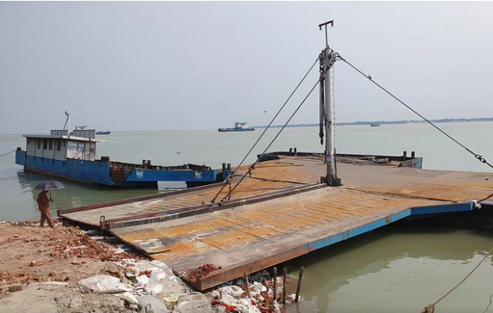

রিমালে ক্ষতিগ্রস্ত দৌলতদিয়ার ৭ নম্বর ঘাট ছয় দিন পরও চালু হয়নি

ঘূর্ণিঝড় রিমালে ক্ষতিগ্রস্ত রাজবাড়ীর গোয়ালন্দ উপজেলার দৌলতদিয়ার ৭ নম্বর ফেরিঘাট গতকাল
শনিবার পর্যন্ত চালু হয়নি। গত রোববার ৭ নম্বর ফেরিঘাটের সংযোগ সড়কের মাথা ধসে পন্টুনটি
ক্ষতিগ্রস্ত হয়। এখন দৌলতদিয়ায় মাত্র দুটি ঘাট সচল রয়েছে। এ অবস্থায় আসন্ন ঈদযাত্রায় যাত্রীরা
ভোগান্তি পোহাবে বলে আশঙ্কা করছেন ঘাটের কর্মীরা।
ফেরিঘাট সংযোগ সড়ক বা ঘাট তদারকের দায়িত্ব বাংলাদেশ অভ্যন্তরীণ নৌ পরিবহন কর্তৃপক্ষের
(বিআইডব্লিউটিএ)। আর র্যামসহ পন্টুনের (যেখানে ফেরি ভেড়ে) দায়িত্ব বাংলাদেশ অভ্যন্তরীণ নৌ
পরিবহন করপোরেশনের (বিআইডব্লিউটিসি)।
ক্ষতিগ্রস্ত ফেরিঘাট সড়ক মেরামতের জন্য বিআইডব্লিউটিএ কাজ করছে। ইটের আদলা ফেলাসহ
বালুভর্তি জিও ব্যাগ ফেলে প্রস্তুত করছে। তবে বিআইডব্লিউটিসি পন্টুন না সরিয়ে নেওয়ায় সে জায়গায়
(কাজ করতে পারছেন না শ্রমিকেরা। এর ফলে কত দিন পর ঘাটটি চালু হতে পারে, নির্দিষ্ট করে কোনো
প্রতিষ্ঠান বলতে পারছে না। বিআইডব্লিউটিএর দাবি, পন্টুনটি সরিয়ে ফেলা হলে তিন দিনের মধ্যে
ঘাটটি সম্পূর্ণ প্রস্তুত করা সম্ভব। বর্তমানে ৩ ও ৪ নম্বর ঘাট দিয়ে যানবাহন পারাপার অব্যাহত রয়েছে।
|